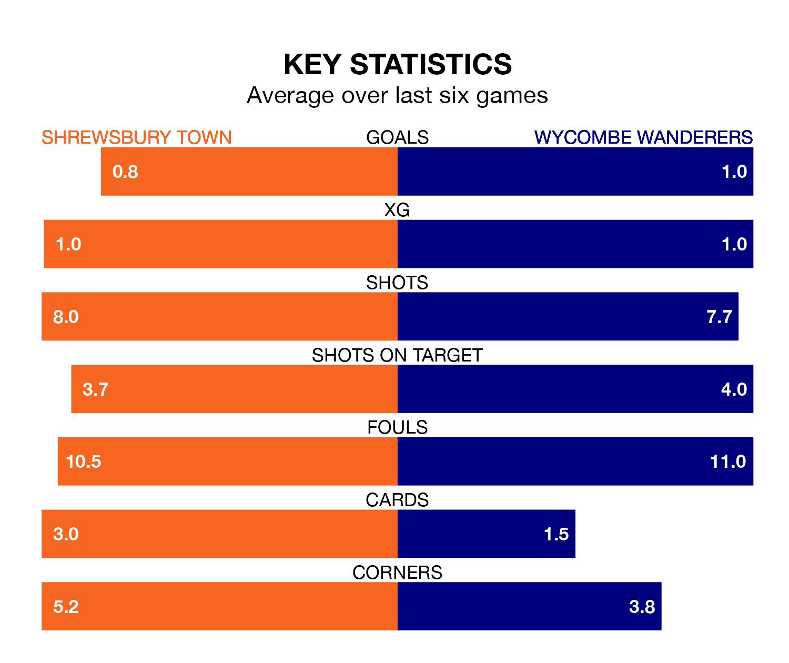

Shrewsbury Town host Wycombe Wanderers on Saturday at the Croud Meadow in EFL League One.
In their last league match, on April 6, Shrewsbury lost to Portsmouth 3-1 away, with their goal scored by Jordan Shipley.
Wycombe drew, 0-0 at home against Derby County on Wednesday.
In the last 10 years, Shrewsbury and Wycombe have played each other on eight occasions. Shrewsbury won four of them, Wycombe three, and they drew once.
On average, the Shrews scored 1.2 goals and the Chairboys 1.0 in those matches.
Their last meeting was on December 9, when Shrewsbury won 1-0 away.
Shrewsbury are 18th in the table after 42 games, of which they have won 13 and drawn seven, earning 46 points.
Wycombe are three places ahead of Town in 15th, with 13 wins and 13 draws putting them on 52 points.
With 31 goals in 42 games so far this season, the Shrews are the league's lowest scorers with 0.7 goals per game. And they are conceding more than average, letting in 59 goals at a rate of 1.4 per game.
Wanderers are also below average scorers, with 1.2 goals per game, compared to a league average of 1.3. They have conceded 1.3 goals per game.
The home side are in mixed form in EFL League One, with two wins and two draws from their last six games.
With three wins and two draws over that period, the Chairboys' form is better – they have taken 11 points from 18, compared to Shrewsbury's eight.
Saturday's match will be refereed by Martin Woods, who has taken charge of 10 EFL League One games so far this season, issuing two red cards and booking 45 players. He has awarded one penalty.
The last Shrewsbury game Woods refereed was a 1-0 home win against Derby County on October 21. He is yet to oversee a match featuring Wycombe this season.
Updated: 10:01 (UTC), 12/04/24